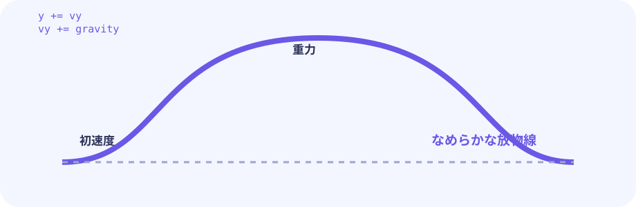
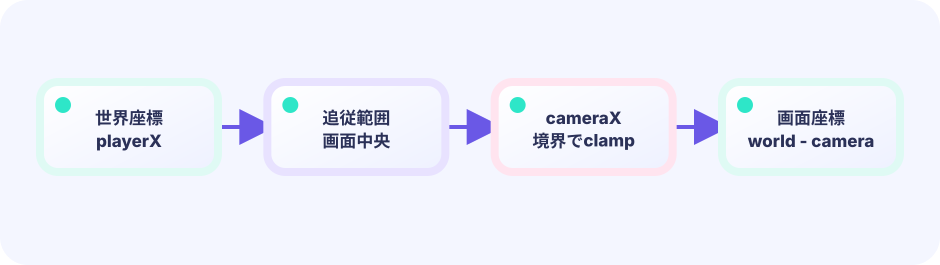

サイン波の往復
時間を math.Sin に通すと -1〜+1 をなめらかに往復する値が出ます。これに移動幅を掛けると、足場がゆっくり振れます。
x = baseX + sin(t)*rangeX
★★☆☆☆ / PLAYABLE
上下左右に動く足場へ乗り、足場の移動量をプレイヤーへ伝えます。前フレームの位置を覚えておくだけで、複雑な動きにも追従できます。
見た目はオリジナル主人公の 海老・天次郎。当たり判定は図形のままです。動きの計算は LEVEL 01 の Update / Draw と同じ枠の中に書きます。
はじめて読む人へ
相対移動は『床が前のコマから何px動いたか』という差を天次郎にも足す考え方。動かす前のoldXを記録し、dx=新しいx-oldXを求めます。 PLAYABLEは『このページで実際に操作できる』という印です。
このページの1本
説明と次のコードを対応させてから、ゲームで変化を確かめよう。
oldX:=platform.x; platform.x+=platform.vx; player.x+=platform.x-oldX


PLAYABLE / WEBASSEMBLY
A・D または画面下タッチで左右移動。スペースまたは画面上タッチでジャンプ。足場が動いても乗り続けられるか挑戦してみましょう。
DEEP DIVE / MOVING PLATFORMS
足場は math.Sin でなめらかに往復します。コツは 「動かす前の位置を記録」 すること。動かしたあとに差を計算し、プレイヤーが乗っていればその差をプレイヤーにも加えます。プレイヤーは足場の動きを「もらって」一緒に動くのです。
時間を math.Sin に通すと -1〜+1 をなめらかに往復する値が出ます。これに移動幅を掛けると、足場がゆっくり振れます。
x = baseX + sin(t)*rangeX
足場を動かす直前に oldX, oldY へ座標を保存します。動かしたあとに現在位置から引くと、このフレームの移動量が求まります。
p.oldX, p.oldY = p.x, p.y
プレイヤーが乗っている足場の移動量を、そのままプレイヤー座標に加えます。プレイヤーが独自の動きをしながら足場と一緒に進めます。
player.x += p.x - p.oldX
TRY IT / LAB
乗っているときだけ、足場の移動差分をプレイヤー座標へ足します。
本物のゲームの公式を、手でゆっくり回す模型です。
TRY IT · GO
d := plat.x - plat.prevX if riding { player.x += d } plat.prevX = plat.x; plat.x += vx
—
THE ONE-LINE RULE
delta = currentPos - oldPos
そして
player.pos += delta // 乗っているとき
移動量（デルタ）の計算は引き算だけです。sin の速さが変わっても、ジャンプしている最中の別の足場に乗り直しても、この式は変わりません。
IN THE REAL GAME
動かす前に oldX, oldY を記録し、sin で座標を更新。プレイヤーの足が古い足場上面に近ければ乗客と判定し、移動量を加えます。
for i := range g.platforms {
p := &g.platforms[i]
p.oldX, p.oldY = p.x, p.y // 古い位置を保存
t := float64(g.frame)*.025 + p.phase
p.x = p.baseX + math.Sin(t)*p.rangeX
p.y = p.baseY + math.Sin(t)*p.rangeY
// 足がこの足場上に近ければ乗客とする
if math.Abs((g.player.y+g.player.h)-p.oldY) < 3 &&
g.player.x+g.player.w > p.oldX && g.player.x < p.oldX+p.w {
standing = i
}
}
if standing >= 0 {
p := g.platforms[standing]
g.player.x += p.x - p.oldX // デルタを渡す
g.player.y += p.y - p.oldY
}WITHOUT DELTA TRANSFER
デルタを渡さないと、プレイヤーは自分の座標のまま止まります。足場が動いて下から抜けると落下してしまいます。
WITH OLD-POSITION TRICK
Sin 以外の経路（直線・楕円・ランダム）でも、古い位置を保存するだけで同じデルタ計算が使えます。
YOUR FIRST TUNING
フレーム係数 .025 を大きくすると足場が速くなり、rangeX / rangeY を大きくすると移動幅が広くなります。どこまで難しくできますか？
FEEDBACK